Unlocking/Locking Airbag Plug Connections
72 12 ... - Unlocking/locking airbag plug connections

Warning!
Read and comply with [1][2]Safety Regulations for Handling Components with Gas Generators safety regulations for handling airbag modules and pyrotechnical belt tensioners.

Important!
An airbag plug connection must be replaced if it is damaged.
Sourcing reference for airbag repair instructions (with plug connection), refer to BMW Parts Service.

Following versions of plug connections on airbag module/gas generator are possible:
- Airbag plug connection on gas generator/airbag module is offset by 90°
- Airbag plug connection on gas generator/airbag module is straight (3 versions)
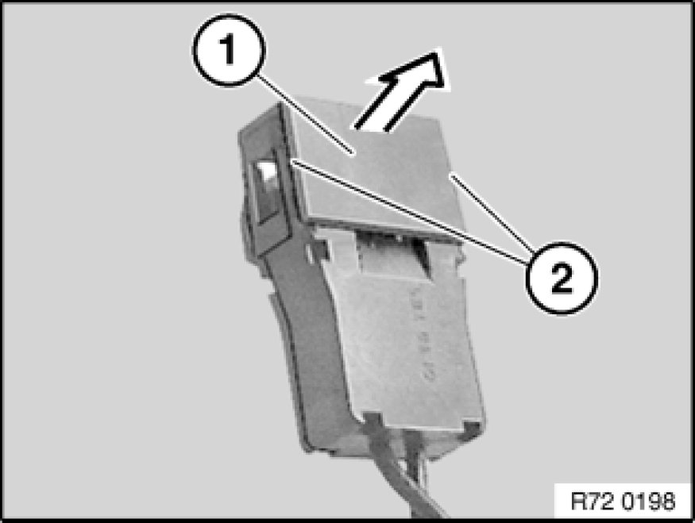
Airbag plug connection on gas generator/airbag module offset by 90°:
There are two ways of unlocking this airbag plug connection on the gas generator/airbag module:
Method 1:
Simultaneously pull cover (1) upwards at lugs on left and right (2).
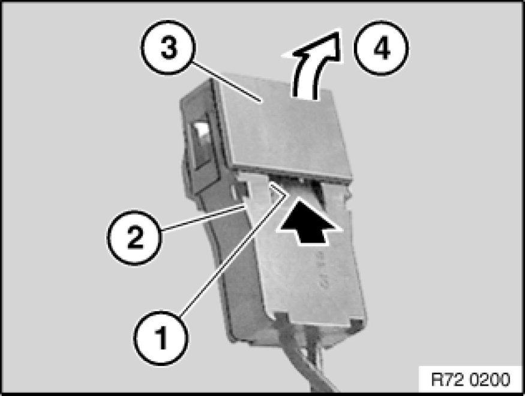
Method 2:
Insert a narrow screwdriver into recess (1) in housing (2).
Carefully pry cover (3) off (4).
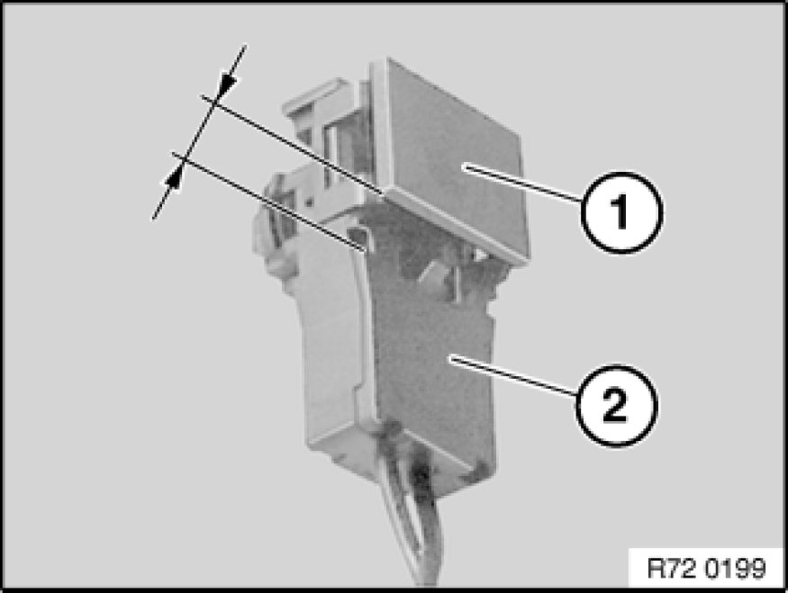
Cover (1) is not positioned higher than housing (2).
The airbag plug connection is unlocked and can now be detached from the gas generator/airbag module.
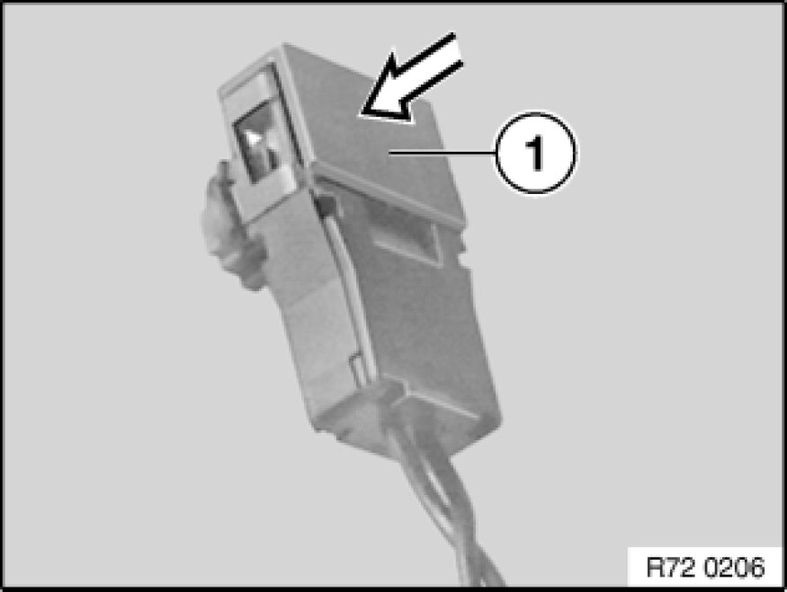
Installation Note:
After attaching airbag plug connection to gas generator/airbag module, press cover (1) downwards until it rests flat on housing.
Check that it catches properly.
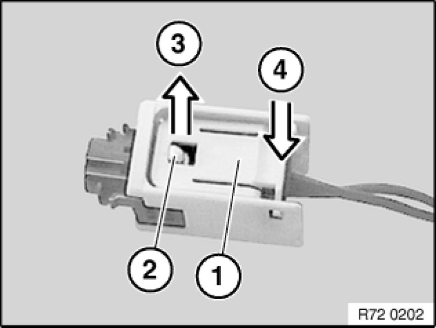
Airbag plug connection on gas generator/airbag module is straight (2 versions)
Version 1:
Press locking/unlocking plate (1) at edge (4).
Locking/unlocking plate (1) snaps upwards at opposite edge (3) and releases detent lug (2).
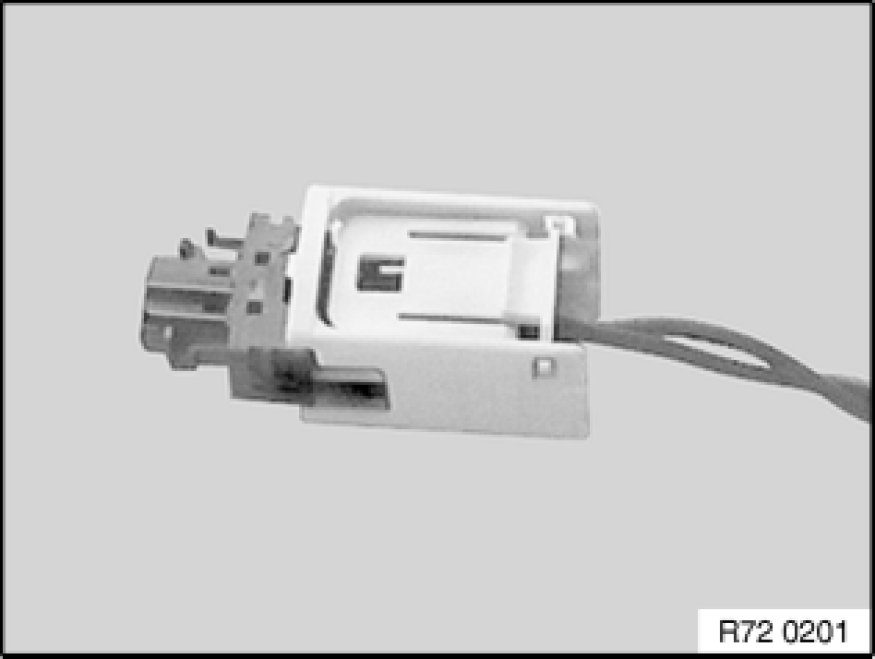
The airbag plug connection is unlocked and can now be detached from the gas generator/airbag module.
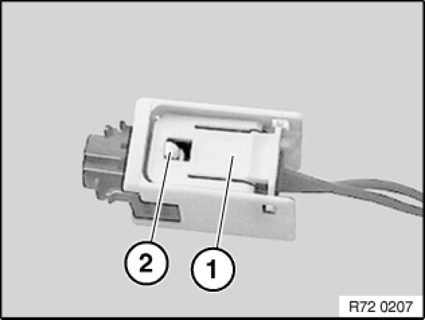
Installation Note:
After attaching airbag plug connection to gas generator/airbag module, check whether detent lug (2) is visible in opening of locking/unlocking plate (1).
Only if the detent lug (2) is visible will the airbag plug connection gas generator/airbag module be correctly engaged.
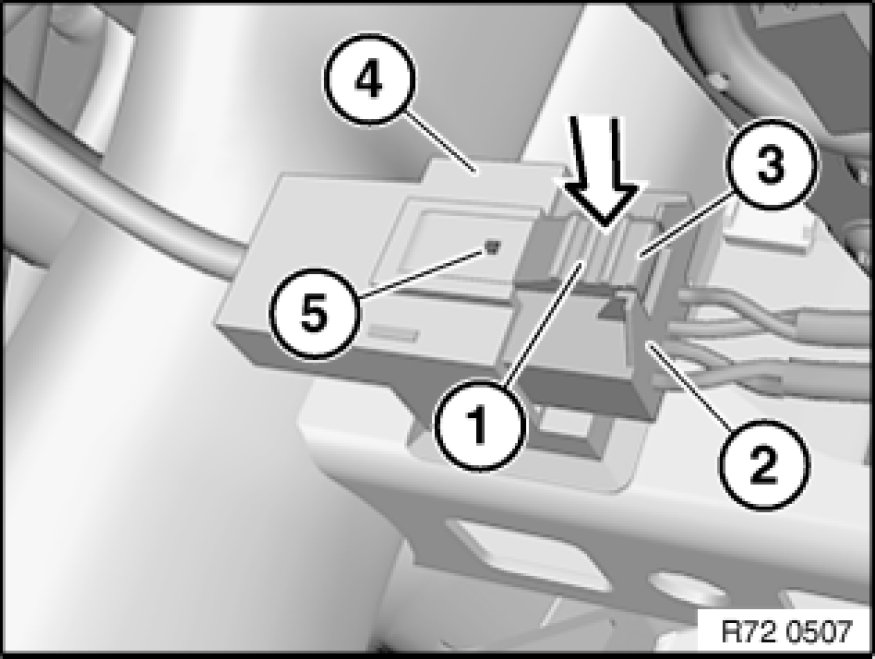
Version 2:
Press locking/unlocking plate (1) on edge (3) and pull plug (2) out of plug housing (4).
Installation Note:
Only if the detent lug is visible in opening (5) will the gas generator/airbag module plug connection be correctly engaged.
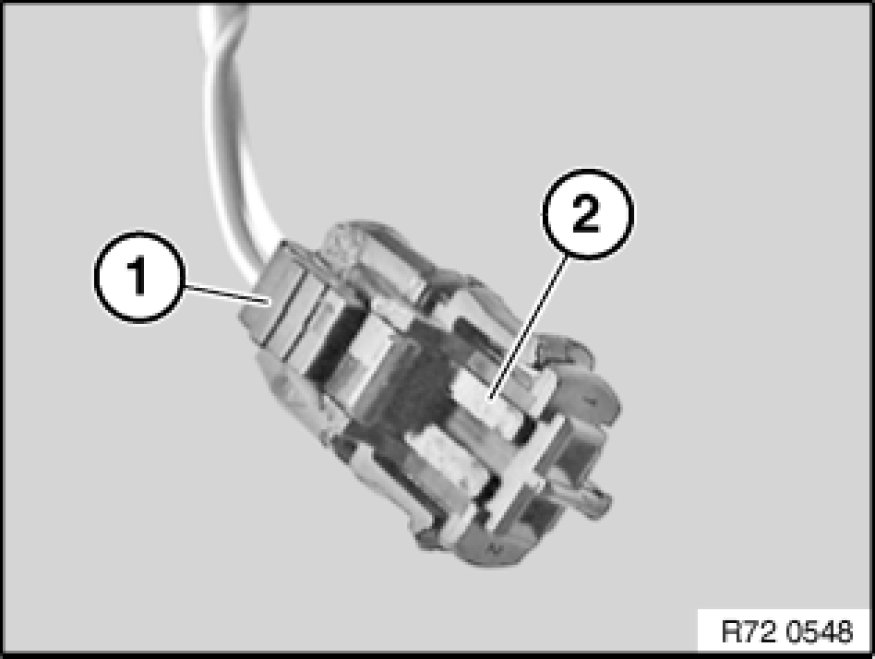
Version 3:
Press lock button (1) and pull out plug (2) up to initial engagement position.
Detach plug (2) from firing pellet.
Installation Note:
Insert plug connection in initial engagement position in gas generator/airbag module and engage in final engagement position.
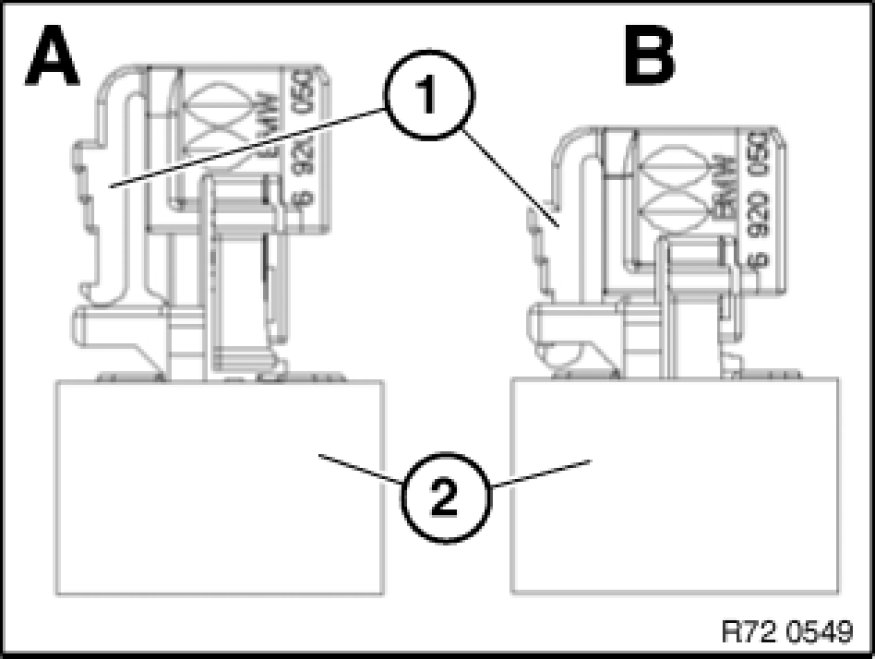
Illustration of version 3 with gas generator:
-A)
- Initial engagement position
-B)
- Final engagement position
1. Lock button
2. Gas generator
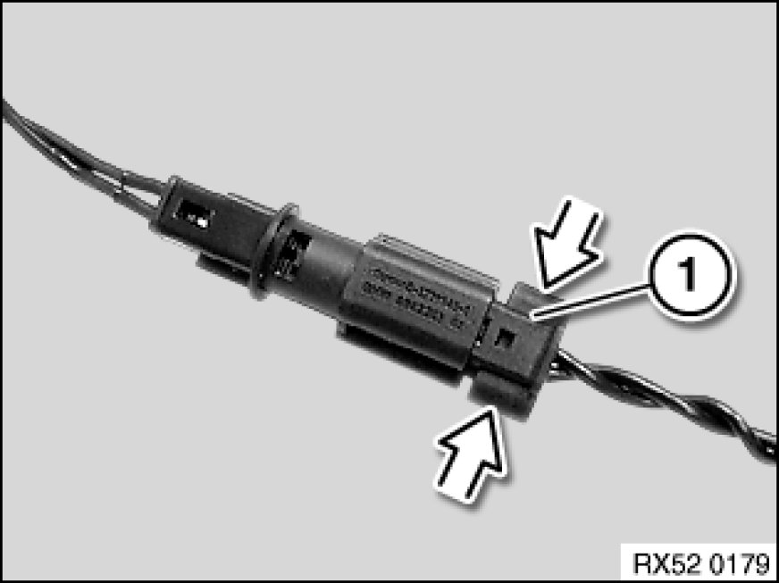
Version 4 - Crash-active head restraint:
Press locking clip at edge and disconnect plug (1).
Installation Note:
Check for correct engagement.